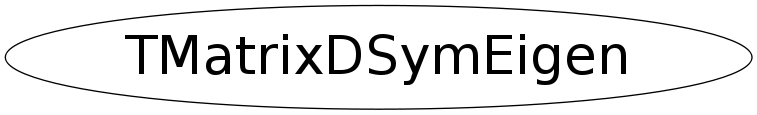

class TMatrixDSymEigen
TMatrixDSymEigen Eigenvalues and eigenvectors of a real symmetric matrix. If A is symmetric, then A = V*D*V' where the eigenvalue matrix D is diagonal and the eigenvector matrix V is orthogonal. That is, the diagonal values of D are the eigenvalues, and V*V' = I, where I is the identity matrix. The columns of V represent the eigenvectors in the sense that A*V = V*D.
Function Members (Methods)
public:
| TMatrixDSymEigen() | |
| TMatrixDSymEigen(const TMatrixDSym& a) | |
| TMatrixDSymEigen(const TMatrixDSymEigen& another) | |
| virtual | ~TMatrixDSymEigen() |
| static TClass* | Class() |
| const TVectorD& | GetEigenValues() const |
| const TMatrixD& | GetEigenVectors() const |
| virtual TClass* | IsA() const |
| TMatrixDSymEigen& | operator=(const TMatrixDSymEigen& source) |
| virtual void | ShowMembers(TMemberInspector& insp) |
| virtual void | Streamer(TBuffer& b) |
| void | StreamerNVirtual(TBuffer& b) |
protected:
| static void | MakeEigenVectors(TMatrixD& v, TVectorD& d, TVectorD& e) |
| static void | MakeTridiagonal(TMatrixD& v, TVectorD& d, TVectorD& e) |
Class Charts
{kind=link}
{kind=link}
{kind=link}
{kind=link}

Function documentation
void MakeTridiagonal(TMatrixD& v, TVectorD& d, TVectorD& e)
This is derived from the Algol procedures tred2 by Bowdler, Martin, Reinsch, and Wilkinson, Handbook for Auto. Comp., Vol.ii-Linear Algebra, and the corresponding Fortran subroutine in EISPACK.
void MakeEigenVectors(TMatrixD& v, TVectorD& d, TVectorD& e)
Symmetric tridiagonal QL algorithm. This is derived from the Algol procedures tql2, by Bowdler, Martin, Reinsch, and Wilkinson, Handbook for Auto. Comp., Vol.ii-Linear Algebra, and the corresponding Fortran subroutine in EISPACK.
const TMatrixD & GetEigenVectors() const
If matrix A has shape (rowLwb,rowUpb,rowLwb,rowUpb), then each eigen-vector must have an index running between (rowLwb,rowUpb) . For convenience, the column index of the eigen-vector matrix also runs from rowLwb to rowUpb so that the returned matrix has also index/shape (rowLwb,rowUpb,rowLwb,rowUpb) . The same is true for the eigen-value vector .
{ return fEigenVectors; }